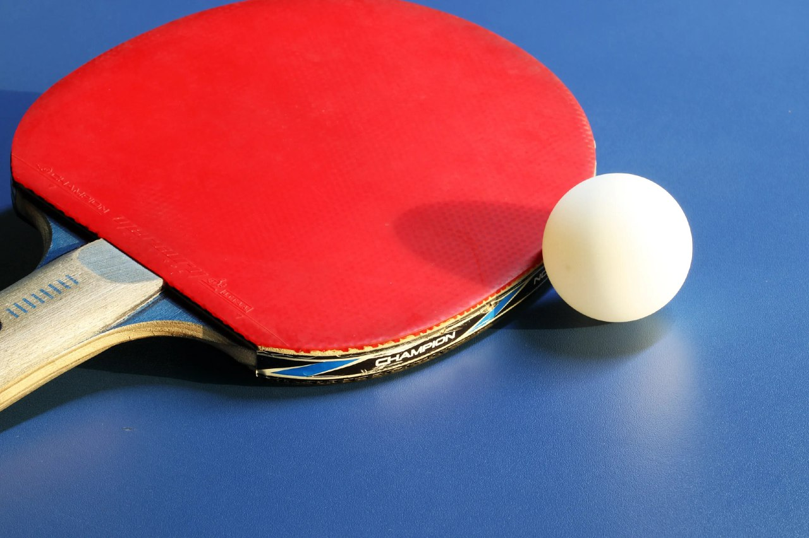
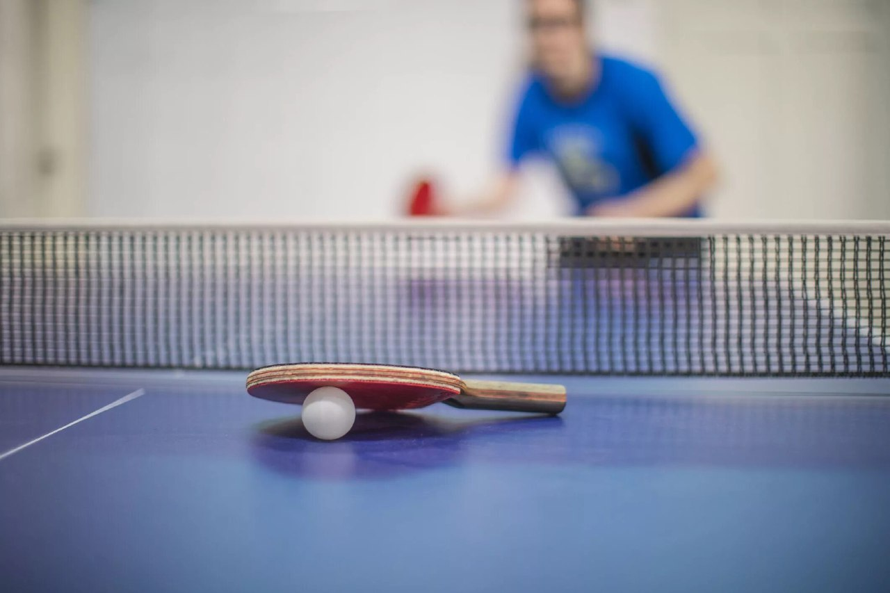
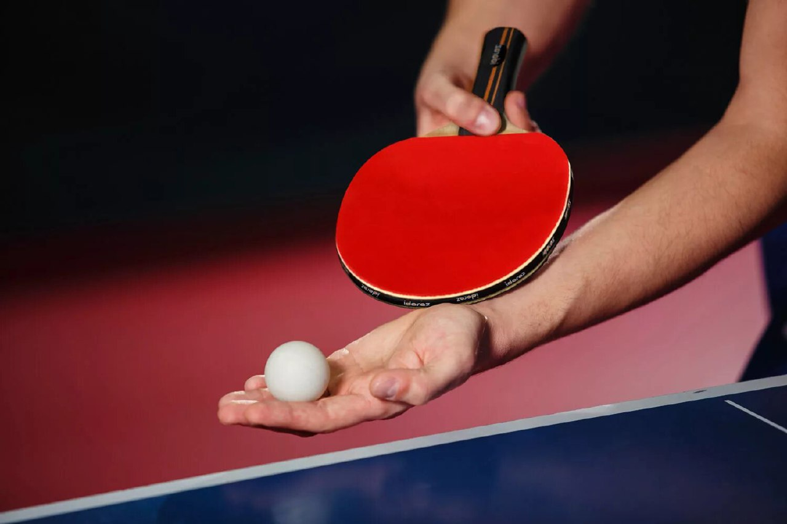

Настольный теннис, также известный как пинг-понг, — это быстрый крытый вид спорта, который играется на небольшом столе, разделенном сеткой.
Игроки используют небольшие ракетки для ударов по легкому мячу взад и вперед, стремясь перехитрить своего соперника с помощью быстрых рефлексов и точных ударов.
Популярный благодаря своей доступности и соревновательному характеру, настольный теннис можно играть на разных уровнях мастерства и он нравится людям всех возрастов.
